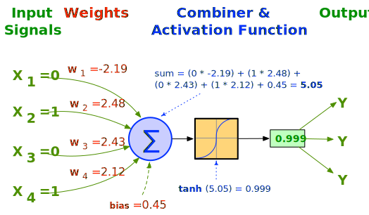
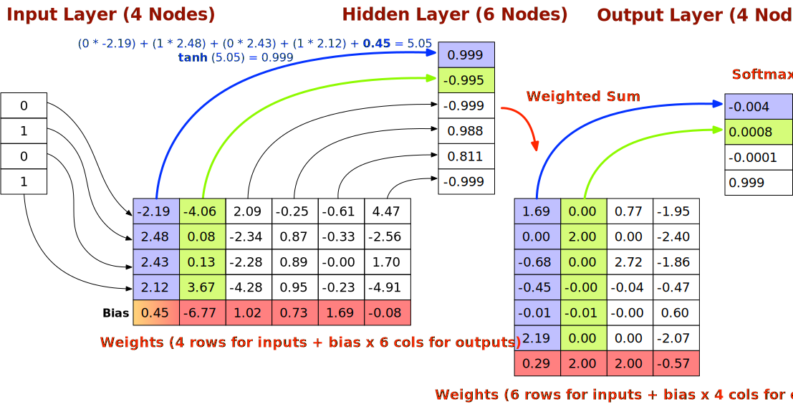

Package jhealy.aicme4j.net
Aicme4j 1.0 - An easy to use feed-forward neural network for Java
This package contains a suite of classes designed to enable the construction and training of a basic feed-forward neural network. Use theNetworkBuilder interface and
NetworkBuilderFactory to build and train an instance of NeuralNetwork.
An example of this is available in the documentation for NetworkBuilderFactory.
A neural network is a mathematical model that attempts to simulate the structure and function of a biological neural network like the human brain. The network consists of highly connected layers of nodes called neurons. Each neuron is an elementary information processing unit that receives one or more inputs, does some computation on the input and then propagates the output to one or more neurons in the next layer. Weighted edges connect the nodes of a layer in the network to the nodes in succeeding and preceding layers. The weighted edges store the knowledge of the neural network.

A neuron uses an activation / transfer function to compute its activation level for its inputs and numerical weights. Each neuron receives multiple input values through its incident edges but only ever produces one output that is propagated in full (not split) to all the neurons that it is connected to. A neural network can be created consisting of a single neuron, but such a network is only capable of learning a linearly-separable function. In practice, a neural network consists of at least three layers:
- An input layer: accepts inputs from an external environment and redistributes these to all neurons in the hidden layer. The number of nodes in an input layer corresponds to the number of features in a data set (the shape of the data set). This is the same as the number of columns in the data set.
- One or more hidden layers: neurons in a hidden layer detect features. Neuron weights represent features that are hidden in input patterns. The Universal Approximation Theorem states that a neural network with a single hidden layer can learn any continuous function for a set of bounded inputs. A continuous function is a function with no gaps or jumps.
- An output layer: accepts output values from a hidden layer and establishes output values for the entire neural network. The number of nodes in an output layer corresponds to the number of labels or categories for a classification task. For regression, where the purpose of the neural network is to predict a numeric value like a stock price or grade point average, a single output node is enough.
Bias and θ Threshold
The bias allows the decision boundary to be moved during training and is the same as -θ for the activation of a perceptron:- f(n) = (x1 * w1) + (x2 * w2) + ...(xi * wi) - θ = 0 (1) Activation of a perceptron
- f(n) = (x1 * w1) + (x2 * w2) + ...(xi * wi) + bias = 0 (2) Activation of a neuron
A bias is needed because the threshold value is usually not known a priori and needs to be determined during training.
Topography and Weights
The number of nodes and layers in a neural network is called the topography of the network. Once this is determined, the neural network must be trained. As shown in the diagram below, a neural network can be implemented as a series ofdouble arrays, having single dimensional arrays for each layer and
two dimensional arrays for the weights between layers.

If there are n nodes in a layer and m nodes in the next layer, then each layer will be represented by arrays of size n rows and m columns respectively. Because each node in each layer is connected to all of the nodes in the next layer, the weights of the edges will require a two dimensional n x m array. A bias (shown in red) is usually added as an extra row of weights. The initial value of the weights are randomised values, typically between -0.5 and 0.5.
You should keep the following points in mind when designing the topology for a neural network:
- Neural networks are an example of supervised learning. This means that they must be trained. Training a neural network means adjusting the weights between layers to bring the output into line with the external environment.
- Neural network design is typically empirical and the topology depends on the specific problem.
- There is no neural network design methodology for creating a topology that works for a large number of problems.
- It is difficult to interpret the result of a classification, as the neural network cannot explain why it came to a decision.
- Since:
- Aicme4j 1.0
- Author:
- Dr. John Healy, ATU.
-
ClassDescriptionEnum for neural network activation functions.This class contains various stateless methods for manipulating the
doublearrays used in the implementation of the neural network.An implementation of the algorithm for training a multi-layer feed-forward neural network described by Bryson and Ho (1969).A fluent builder for constructing and training a multi-layer neural network.Enum for the heuristic to use to compute the number of nodes in a hidden layer of a neural network based on the sizes of the input and the output layers.Enum for neural network loss functions.A multi-layer feed-forward neural network that can learn using supervised training.A representation of a layer in a neural network.Enum for the tranformation to apply to the highest weighted element in the output vector of a neural network and can be applied to either categorical or numeric data.A record of the hyperparameters used for the backpropagation training of a neural network.